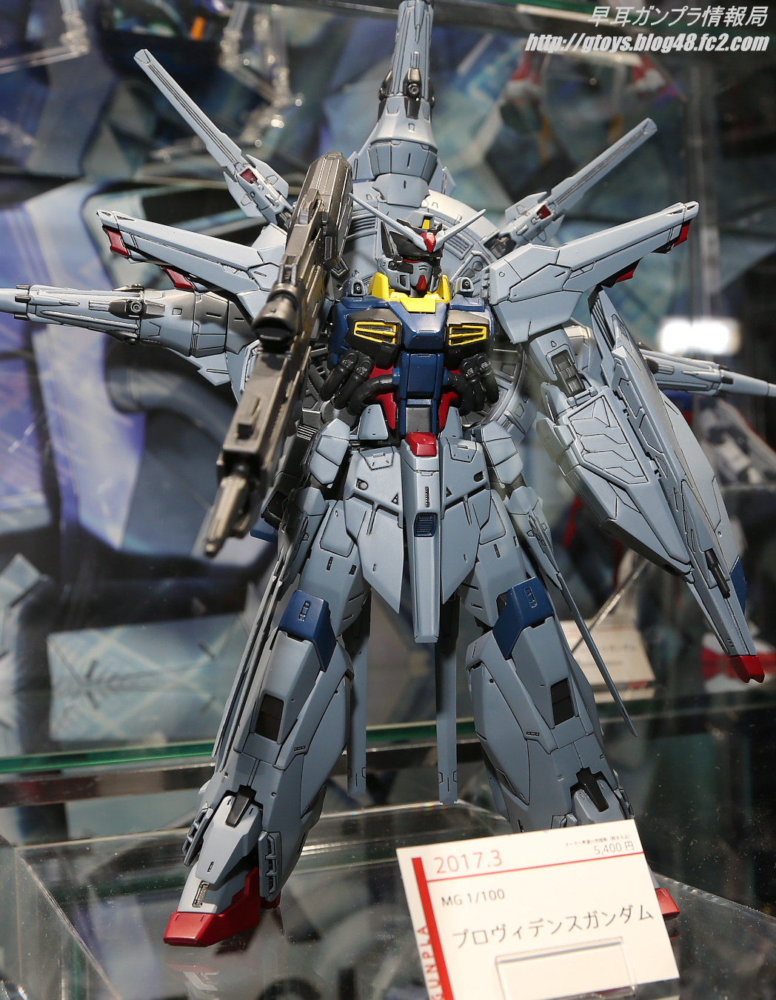

The MG is 1:100, with a fine appearance and reasonable joints. There are more parts, and the details of the engraved lines are more than RG. Most of the later models have complete skeleton internal structures.
Master Grade (MG) models were first introduced in the summer of 1995, designed and made to higher standards than most other models. These kits take much longer to construct and are often much more expensive than their lower-grade counterparts.[6] More recent Master Grade plastic models typically feature a movable inner frame system which enables extensive movement and bending of joints. As well including standing and seating miniature figures of the pilots of each gundam model. The popularity of this line was so great that a lot of old and new mobile suits from non-graded series were remade as Master Grade models.
Press back to go back.
MG Gundam